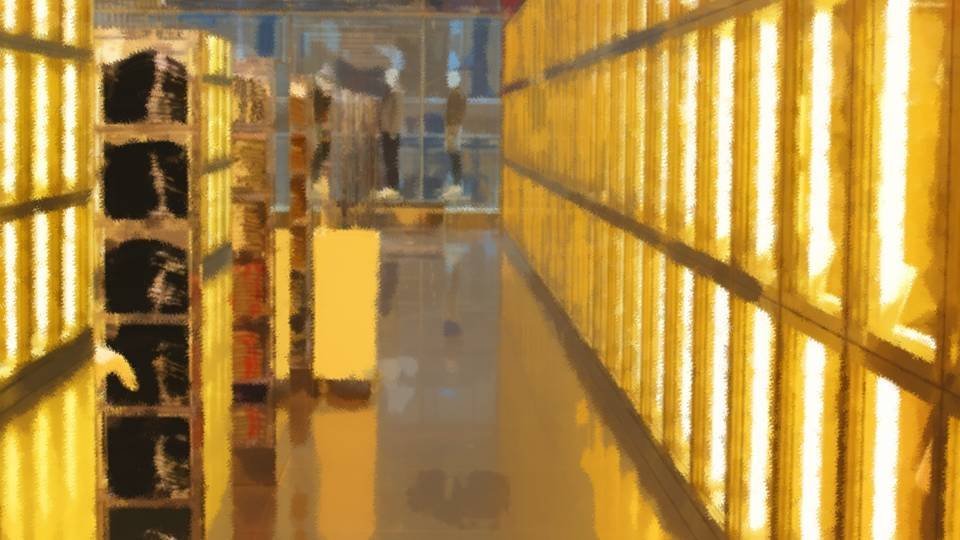

Script 00001BEE



"How's this?!"
"Hmm..."
"Same as always, huh..."
"Hmm..."
"Same as always, huh..."
"Well, yeah, this is always my style. A hoodie that's easy to move in and shorts are plenty, right?"
"Hmm..."
"It'd be nice to see a bit more change, or something along those lines... Actually, do you even own a skirt?"
"Hmm..."
"It'd be nice to see a bit more change, or something along those lines... Actually, do you even own a skirt?"
"A skirt? Nope, not in my own clothes, not for about ten years now."
"Does it have anything to do with how you talk like a guy?"
"You... that's a tactless thing to ask..."
"But you used to wear dresses and stuff and had long hair, right?"
"Does it have anything to do with how you talk like a guy?"
"You... that's a tactless thing to ask..."
"But you used to wear dresses and stuff and had long hair, right?"
"Ah, well, yeah, that's true. But how do I put it...
See, back in Megasawa I was weak in all sorts of ways, so I wanted to get even a little stronger, I guess."
"So that's why the guy-like talk and clothes?"
"Haruka, I don't think that's the same as being strong..."
"So that's why the guy-like talk and clothes?"
"Haruka, I don't think that's the same as being strong..."
"Hey, what's the big deal? It's my style, so it's fine, isn't it..."
"You're tall and you've got a nice figure, so I think there are clothes that would suit you better, you know?"
"Yeah, shorts and a hoodie don't have much sex appeal..."
"I don't need any sex appeal anyway..."
"You're tall and you've got a nice figure, so I think there are clothes that would suit you better, you know?"
"Yeah, shorts and a hoodie don't have much sex appeal..."
"I don't need any sex appeal anyway..."


"No! It's about time you got more girly! You're 17 already, aren't you?!"
"Time to graduate from acting tough with just your looks and the way you talk! Truly strong people shine from the inside!"
"How did this turn into a project to make me over... Even so, I can't just change the way I talk all of a sudden, and I'm not wearing some frilly dress..."
"Time to graduate from acting tough with just your looks and the way you talk! Truly strong people shine from the inside!"
"How did this turn into a project to make me over... Even so, I can't just change the way I talk all of a sudden, and I'm not wearing some frilly dress..."


"All right, Haruka! Look forward to this Christmas! I'll give you the outfit that suits you best!"
"Ha! That's a great idea! Leave it to Kogori-senpai! Hey, hey, what are you giving me for Christmas?!"
"For you, I was thinking of Zahha's Christmas tower parfait?"
"Ooh...! As expected of Kogori-senpai, you know me so well...!"
"Ha! That's a great idea! Leave it to Kogori-senpai! Hey, hey, what are you giving me for Christmas?!"
"For you, I was thinking of Zahha's Christmas tower parfait?"
"Ooh...! As expected of Kogori-senpai, you know me so well...!"
"Hmm, this got troublesome...
Well, I guess I'll leave it to Natsumi. It shouldn't turn out badly..."